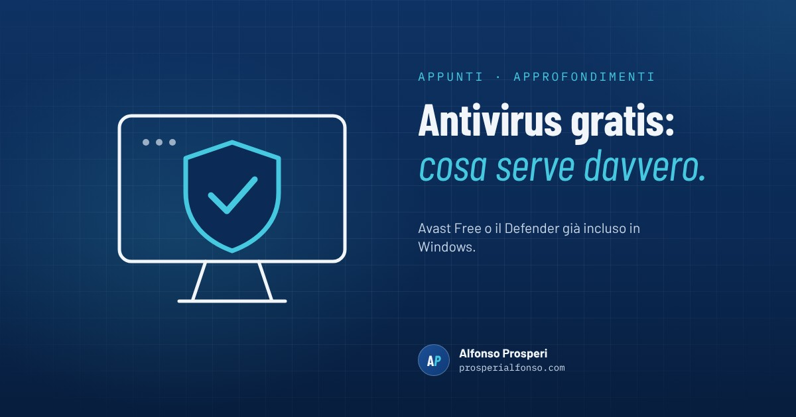

Nel 2020 avevo parlato di Avast come di uno dei migliori antivirus gratuiti. Da allora sono cambiate due cose importanti: Windows ha un antivirus integrato che funziona bene, e Avast ha avuto un problema serio con la privacy. Vediamo cosa conviene fare oggi.
Avast Free Antivirus oggi
Avast Free Antivirus esiste ancora per Windows, Mac e Android. Protegge da virus, malware e siti di phishing, controlla la rete Wi-Fi di casa e segnala i programmi da aggiornare. Accanto alla versione gratuita ci sono versioni a pagamento con funzioni in più, come VPN e protezione dei pagamenti, e l'app propone spesso di passare a quelle.
La multa per i dati di navigazione
Nel 2024 la Federal Trade Commission, l'autorità statunitense per la tutela dei consumatori, ha sanzionato Avast con 16,5 milioni di dollari. Secondo l'autorità, tra il 2014 e il 2020 Avast aveva raccolto i dati di navigazione degli utenti tramite le sue estensioni e i suoi programmi e li aveva venduti a terzi attraverso la controllata Jumpshot, poi chiusa. All'azienda è stato vietato di vendere quei dati per pubblicità. È un buon promemoria: anche un programma di sicurezza va scelto con attenzione.
Basta l'antivirus di Windows?
Per la maggior parte delle persone, sì. Windows 10 e 11 includono Microsoft Defender, già attivo, gratuito e senza pubblicità. Nei test dei laboratori indipendenti ottiene di solito risultati paragonabili ai migliori antivirus gratuiti. Per usarlo bene:
- lascia attivi gli aggiornamenti automatici di Windows;
- controlla ogni tanto in Sicurezza di Windows che la protezione sia verde;
- non installare due antivirus insieme: si ostacolano a vicenda.
Quando ha senso un antivirus in più
- se vuoi funzioni extra, come il controllo della rete di casa o il gestore di password integrato;
- su un Mac o un telefono Android usato da chi installa spesso app fuori dagli store ufficiali.
In questi casi leggi bene cosa raccoglie il programma e preferisci aziende trasparenti sulla privacy.
Più importante dell'antivirus
Nessun programma ti salva da un clic sbagliato. Aggiornamenti, password diverse per ogni sito, verifica in due passaggi e un controllo con VirusTotal per i file sospetti contano più del nome dell'antivirus.